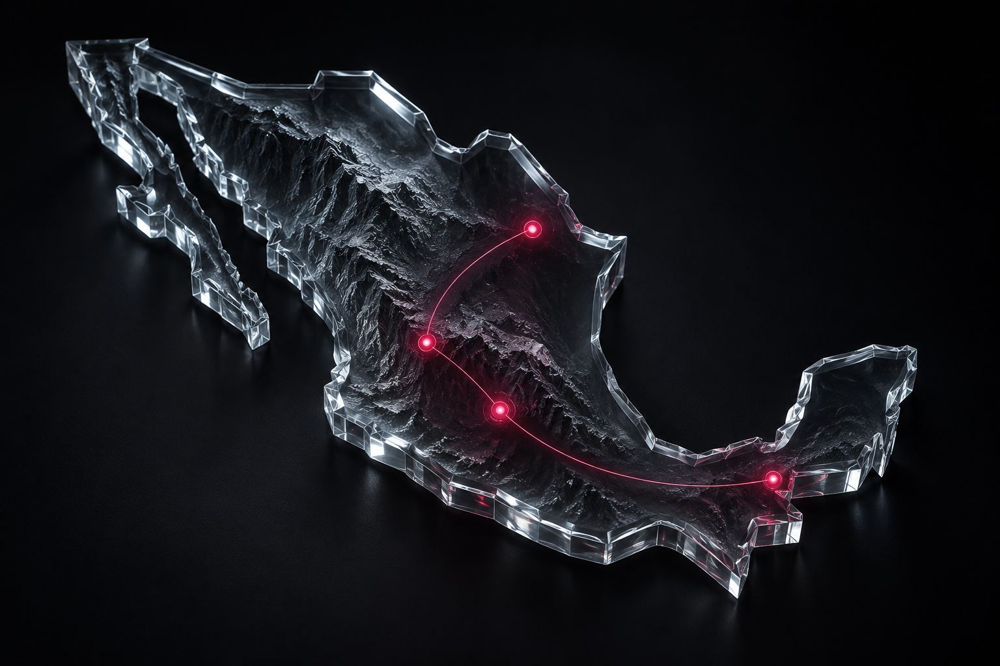

Commercial Representation
We find the right buyer, build long-term relationships and get deals done.


Scroll to continue

Industrial and cross-border powerhouse.
The logistics and manufacturing engine.
The corporate and consumer hub.
The new frontier for development and infrastructure.
Partner · SICE
AI-powered smart tolling, traffic control and real-time tunnel monitoring. We support concessionaires and operators from identifying the need through commissioning.
Partner · Vista Alegre
Materials and heavy logistics for construction and infrastructure. We keep supplies flowing so projects never stall for lack of materials.
Partner · NUCTECH
Non-intrusive cargo inspection and high-throughput passenger screening with state-of-the-art scanners, for customs, ports, airports and transit.
Partner · ENTELAR
High-speed fiber optics and FLEXI WAN networks for critical infrastructure: reliable communications where operations can't stop.

ITS systems, AI-powered free-flow tolling and autonomous, algorithm-driven monitoring of road tunnels.
Uninterrupted supply of structural materials and a heavy logistics network for large-scale civil infrastructure foundations.
In-depth, technology-driven cargo inspection and high-throughput validation for rail ticketing systems.
Design and installation of backbone fiber-optic infrastructure and setup of FLEXI WAN private connectivity.
Contact
Tell us what's eating up your time. We'll get back to you personally.